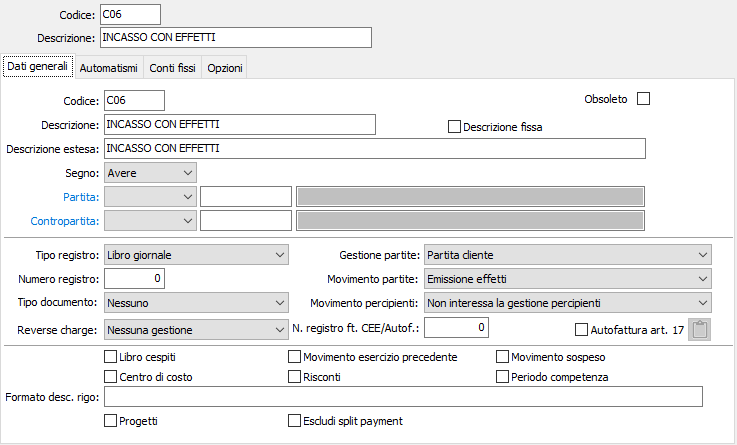
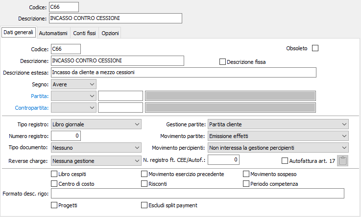
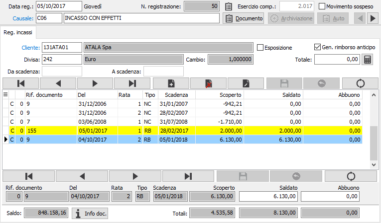
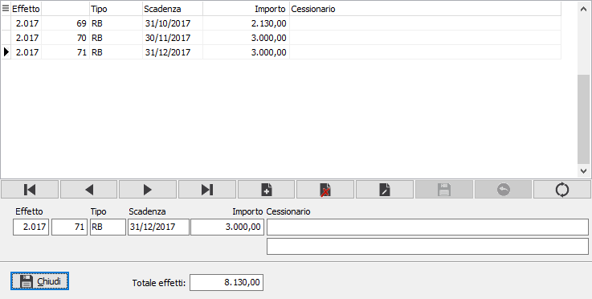
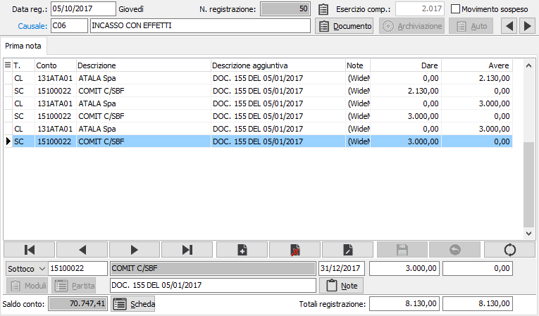

Registrazione incassi contro cessioni o riemissione effetti
Talvolta avviene che un cliente provveda al pagamento di fatture tramite cessioni; oppure che chieda di emettere ricevute bancarie o tratte a fronte di una o più scadenze già previste a mezzo rimessa diretta; o, ancora, che richieda la remissione di ricevute bancarie o tratte a copertura di uno o più insoluti.
Tuttavia, stante la particolarità di questi movimenti, è consigliabile all'occorrenza creare causali specifiche, anche la fine di consentire una agevole selezione di questi movimenti tramite il programma di Lista Prima nota.
Le causali adeguate sono analoghe alle seguenti:


La registrazione inizia con l'accesso alle Partite Aperte tramite la finestra video di Registrazione effetti, praticamente identica a quella di Registrazione incassi. Inserito il codice del cliente, vengono visualizzate le scadenze scoperte dello stesso.
L'utente ricordi, nel caso debba riscadenziare effetti a fronte di un effetto già presentato per l'incasso e non ancora tornato insoluto, di apporre la spunta nel check box Esposizione al fine di visualizzare anche le scadenze esposte.

L'utente provvederà a selezionare le scadenze da riscadenzare, posizionandosi nel relativo campo saldato e selezionando gli importi tramite il tasto funzione F11, oppure inserendo importi inferiori allo scoperto di ciascuna scadenza in caso di remissione parziale. Possono essere selezionate scadenze di tipo RD (rimessa diretta), eventualmente deducendo, selezionandole, scadenze di tipo NC (note di credito) e AN (anticipi).
È possibile selezionare anche scadenze di tipo RB, ma solo se le stesse non hanno ancora generato la scrittura contabile di saldo cliente: gli utenti che utilizzano i moduli vendite hanno la possibilità di generale la scrittura di saldo cliente (Effetti attivi a Cliente) al momento della contabilizzazione effetti, oppure al momento della generazione della distinta definitiva di presentazione, in base ad una specifica modalità di configurazione applicata.
In ogni caso, una volta ottenuto il totale delle scadenze da riemettere, l'utente, con il cursore posizionato su un campo saldato, potrà ottenere l'apertura della finestra video di Registrazione effetti utilizzando i tasti funzione CTRL+F11.
Viene visualizzata interattivamente la finestra video di Registrazione effetti ed il cursore si posiziona sul campo Tipo (effetto) relativo al primo effetto da registrare.

L'utente dovrà selezionare, anche tramite lo zoom F9, il Tipo scadenza adeguato scegliendo tra CE (Cessione), RB (Ricevuta Bancaria), TR (tratta). A conferma, il cursore passa al campo Scadenza in cui l'utente dovrà indicare la data di scadenza dell'effetto. A conferma, il cursore passa al campo Importo visualizzando il totale delle scadenze selezionate nella finestra video precedente. L'utente ha ovviamente la possibilità di modificare tale importo inserendo l'effettivo importo dell'effetto da riemettere. Infine, nel caso di registrazione di cessioni, è possibile indicare il nome del debitore principale e la piazza di pagamento.
È naturalmente possibile registrare altre scadenze, con le stesse modalità, fino a concorrenza del totale effetti selezionato nella finestra video precedente. È comunque necessario che la riemissione quadri con il totale delle scadenze precedentemente selezionate, perché il programma non accetta riemissioni non quadrate. Al termine, confermando tramite pressione del bottone Chiudi, il programma passa alla finestra video Prima nota visualizzando la registrazione contabile generata.

I sottoconti di contropartita utilizzati per la registrazione contabile vengono automaticamente assegnati dal programma in base al tipo di configurazione impostata per la gestione degli effetti.